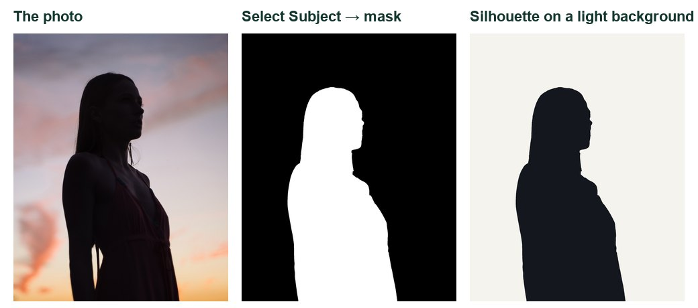
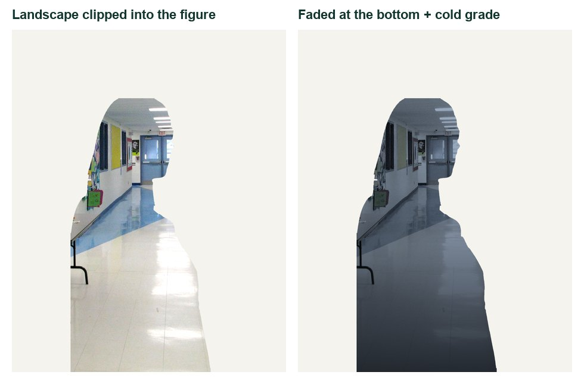
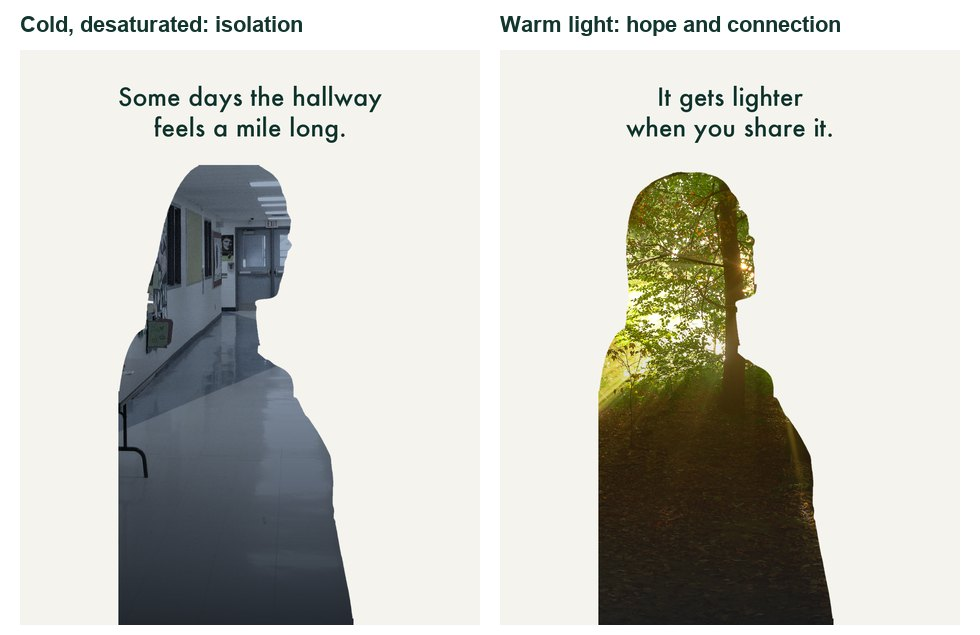
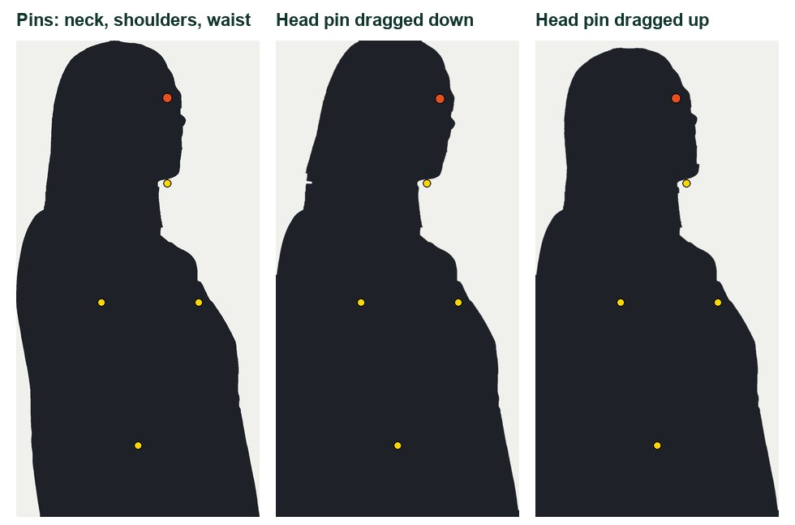
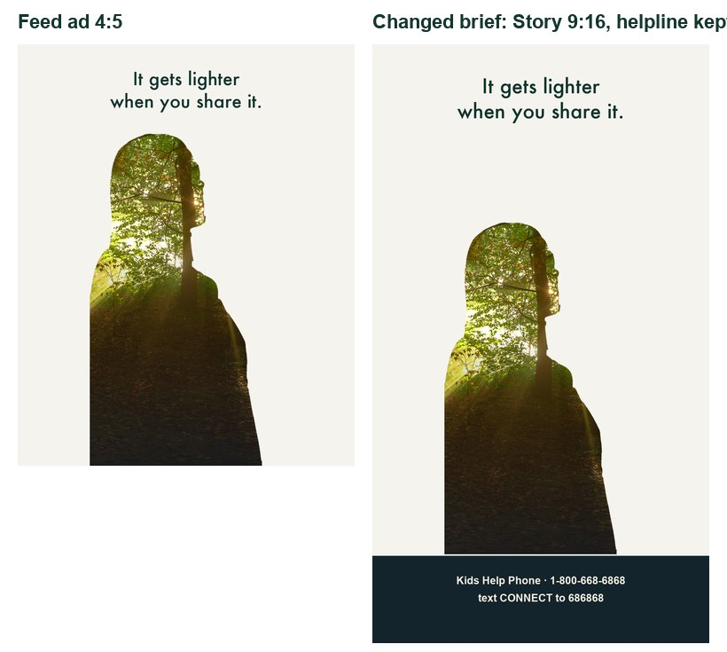

Demo PSA frame made from openly licensed photos (credits in Sources). Your issue, message and images are your own.
One audience. One feeling. One next step.
A youth organisation is running a student-made PSA campaign on screens around the school. Your ad has twelve seconds to make someone feel less alone, or to act.
My supports
Turn on any help you want. Your teacher may have set some for you. They change how the guide helps, not what is assessed.
Campaign brief
A 12-second PSA for the school screens and social media.
Choose one issue from the approved list, one audience and one action. Build a double-exposure PSA in Photoshop, animate it in the Timeline, and adapt it when the client changes the brief. Sprint 5 will add sound.
Approved issues
Kindness and standing up to bullying
Online pressure and comparison
Loneliness and belonging
Stress and asking for help
Being kind online
Another issue? Propose it to your teacher first. Your teacher approves every concept before production.
Safe-messaging rules (every PSA)
Focus on hope, connection and help-seeking, not shock.
Never show or describe self-harm, suicide, methods or injuries, and never present them as a solution.
No blame, stereotypes or labels (“crazy”, “weak”). Use respectful, person-first words.
End with a real, correctly copied support: Kids Help Phone (1-800-668-6868 · text CONNECT to 686868), a school counsellor or a trusted adult.
Identifiable classmates only with their clear permission; no real people’s stories without consent.
Based on Mental Health Commission of Canada guidance for anyone publishing about mental health. M1M2
You will hand in
Approved PSA plan and storyboard
v1 and v2 MP4s (original and changed brief)
A JPG still with alt text
Layered PSD and source log
Sound plan for Sprint 5
Help
Use the Coach for tools and terms in guided steps. The practical check is your own decisions. You can change topics at any time.
LOOKING AFTER YOURSELFIf working on your topic brings up hard feelings, you can switch topics at any time, no reason needed. Talk to your teacher or school counsellor, or reach Kids Help Phone 24/7: 1-800-668-6868 or text CONNECT to 686868. In a crisis, call or text 9-8-8. K1K2
Industry connection
PSAs are advertising that asks for nothing but attention.
Agencies make public service announcements for charities, health services and governments, often for free. They use every advertising tool (a single striking image, a clear audience, one call to action), but the product is a change in behaviour. Responsible creators follow guidance on how to talk about mental health: they show hope and help, and they never show harm. M1
Double exposure comes from film photography, where two shots were exposed on the same frame. Designers now build it in Photoshop because it can show a person and their inner world in one image.
Double exposure effect (Photoshop Training Channel): a longer, high-end walkthrough with refinements.
Knowledge first
How a PSA persuades.
Audience, message, action
Name one audience, one feeling they already know, and one realistic action. Messages that offer a next step change behaviour more than messages that only frighten.
Principles of art and design
Emphasis: one focal point per frame, where the figure’s head meets the brightest part of the place.
Contrast: between frames, the change in colour, pose and light tells the story before any words.
Unity: the same figure, typeface and layout across frames make it one ad.
Movement and rhythm: slow changes feel reflective; quick cuts feel urgent.
Colour
Cool, desaturated colour suggests distance and heaviness; warm, saturated light suggests safety and hope. Use value contrast so text is always readable.
Typography for motion
One line per frame, 8 words or fewer, large sans serif, held at least 2.5 seconds. The support details are the most important text, so they need to be bold, boxed and exact.
The Photoshop tools
Double exposure: a silhouette with a place photo clipped inside it and faded with a gradient mask. Puppet Warp: pins on a Smart Object; some hold still, one moves the pose. Timeline: opacity and transform keyframes turn frames into a moving ad.
Primary achievement evidence: the changed-brief adaptation (step 12) and the defence (step 14). Guided steps, supports and partner tests are practice, recorded separately from achievement. Sprint: mm12-26-s04.
Session A · Lesson 4 · mm12-26-s04-d04
Choose an issue. Find the message.
A public service announcement (PSA) has one job: change what one audience feels and does. Today you choose an approved issue, write a message that gives hope and a next step, and storyboard it.
TODAYChoose and get approval (20 min), write the message (15 min), storyboard (30 min).
01
Choose an approved issue and one audience
IN SHORTOne approved issue, one audience, one action; tick the rules; get approval.
READ ALOUD
DOCUMENT: This guide · PSA_plan.txt SELECT: One issue from the approved list · one audience TOOLS / ROUTE: Read · choose · teacher approval
Read the approved issues in Start: kindness and standing up to bullying; online pressure and comparison; loneliness and belonging; stress and asking for help; being kind online.
Choose one issue and one audience (for example, Grade 9s in their first month, or students who game online).
Write down what your audience believes now, and what you want them to feel and do after 12 seconds.
Read the safe-messaging rules in Start. Tick each one in your plan.
Show your issue, audience and intended action to your teacher. Do not start production until it is approved.
LOOKING AFTER YOURSELFIf working on your topic brings up hard feelings, you can switch topics at any time, no reason needed. Talk to your teacher or school counsellor, or reach Kids Help Phone 24/7: 1-800-668-6868 or text CONNECT to 686868. In a crisis, call or text 9-8-8. K1K2
STEP CHECKLIST
GLOSSARY
PSA: Public service announcement: a short ad that serves the public, not a product
Call to action: The one thing you want the audience to do
WHYA PSA that tries to reach everyone reaches no one. One audience and one action make every design decision easier.
CHECKAn approved issue, a specific audience, a before/after statement and all safe-messaging rules ticked.
FIXTopic feels too personal? Choose a different one. You never have to use your own experiences. Not sure it is allowed? Ask before you build.
WORKED EXAMPLE · DIFFERENT OBJECTA student chose “online comparison” for Grade 10 Instagram users. The action was “mute accounts that make you feel worse, and talk about it with a friend”.
STRETCH (AFTER THE CHECK PASSES)Find two real PSAs on your issue. Write who each targets and what it asks them to do.
Method basis: M2. Values and sequence are authored for this project.
02
Write a message that gives hope and a next step
IN SHORTFeeling, hope, action and support; 8 words each; partner test.
READ ALOUD
DOCUMENT: PSA_plan.txt SELECT: Three short lines and one support TOOLS / ROUTE: Write · cut · test on a partner
Write line 1: name the feeling your audience knows (no blame, no graphic detail). For example, “Some days the hallway feels a mile long.”
Write line 2: the turn towards hope. For example, “It gets lighter when you share it.”
Write the end card: one clear action plus a real support (Kids Help Phone, a counsellor, a trusted adult).
Cut every line to 8 words or fewer. A viewer gets about 3 seconds per line.
Read the lines to a partner. Ask: “How does it make you feel? What would you do next?” Rewrite anything that sounds like a lecture.
STEP CHECKLIST
GLOSSARY
Tone: The attitude a message carries: warm, urgent, playful, serious
Help-seeking: Reaching out to someone for support
WHYMessages that show a way forward work better than ones that only shock. Canadian guidance asks creators to include help and hope, and never to show harm. M1
CHECKThree lines of 8 words or fewer: a feeling, a turn to hope, and an action with a real support. Your partner can repeat the action.
FIXSounds preachy? Swap “you should” for “you can”. Too vague? Name one specific action.
WORKED EXAMPLE · DIFFERENT OBJECTOn bullying: “Everyone saw it.” · “One person spoke up.” · “Be that person. Tell someone you trust.”
STRETCH (AFTER THE CHECK PASSES)Write two versions of line 2 in different tones (warm and urgent). Which suits your audience?
Method basis: M1 · M2. Values and sequence are authored for this project.
03
Storyboard three frames with timings
IN SHORTThree frames: feeling, turn, action; plan the double exposure, movement, timing and colour.
READ ALOUD
DOCUMENT: Storyboard_template.pdf or paper · PSA_plan.txt SELECT: Three frames: problem, turn, action TOOLS / ROUTE: Sketch · timings · transitions
Draw three 4:5 frames: 1 the feeling, 2 the turn to hope, 3 the end card.
For frames 1 and 2 plan a double exposure: which figure and which place goes inside it? The place should carry the feeling (an empty hallway, a crowded screen, a sunrise).
Mark what moves in each frame: a head lifting, light rising, a figure turning (you will use Puppet Warp pins).
Write timings under each frame: 0–3 s, 3–7 s, 7–12 s. The end card holds for at least 4 seconds so it can be read.
Write which colours carry each frame (for example, cold grey-blue then warm gold).
STEP CHECKLIST
GLOSSARY
Storyboard: A sequence of sketches showing how a moving piece will unfold
Double exposure: Two images blended so one shows through the other
A three-frame storyboard: each frame has one message, one movement and a timing.
WHYA storyboard is where you solve the ad. Changing a sketch takes seconds; changing an animation takes an hour.
CHECKThree frames with a double-exposure plan, a movement, timings and colours for each.
FIXFrames all look alike? Change one thing strongly between them: colour, pose or place.
WORKED EXAMPLE · DIFFERENT OBJECTThe demo storyboard: cold hallway inside a bowed figure → forest light rising as the head lifts → a dark end card with the helpline.
STRETCH (AFTER THE CHECK PASSES)Add a fourth “hook” frame at 0–1 s that grabs attention in a scrolling feed.
Method basis: V1. Values and sequence are authored for this project.
Session B · Lesson 5 · mm12-26-s04-d05
Build the double exposure.
The double exposure is the heart of the PSA: a person, and inside them, a place that shows how they feel.
TODAYCut out the figure (20 min), blend the place (25 min), grade the meaning (20 min).
04
Build the file and make a clean silhouette
IN SHORTNew 1080 × 1350; Select Subject; mask; clipped dark fill; Smart Object.
READ ALOUD
DOCUMENT: MakeItMatter_YourName.psd · starter pack or your own photo SELECT: The figure (a side profile works best) TOOLS / ROUTE: File › New · Select › Subject · fill · layer mask
Choose File › New: 1080 × 1350 px (4:5 feed ad), 72 ppi. Fill the background with a light off-white (for example #F5F3EE).
Place your figure photo (starter silhouette.jpg, or a profile of a consenting classmate taken against a bright sky or wall).
Choose Select › Subject, then Select and Mask. Raise Smooth slightly and output to a layer mask. Check hair and shoulders.
Add a Solid Color layer in near-black, clip it to the figure (Alt/Option-click between layers), so the figure becomes a clean silhouette.
Group as FIGURE. Convert the group to a Smart Object (you will pin it with Puppet Warp later).
LOOKING AFTER YOURSELFIf working on your topic brings up hard feelings, you can switch topics at any time, no reason needed. Talk to your teacher or school counsellor, or reach Kids Help Phone 24/7: 1-800-668-6868 or text CONNECT to 686868. In a crisis, call or text 9-8-8. K1K2
STEP CHECKLIST
GLOSSARY
Silhouette: A solid shape of a subject with no inner detail
Select and Mask: The workspace for refining a selection’s edges

From photo to mask to silhouette: Select Subject does the cut-out, a clipped colour fill makes the solid shape.
WHYA double exposure needs a strong, simple outline. A side profile reads instantly as “a person”, even when filled with something else.
CHECKA clean near-black silhouette on a light background, with smooth edges and no background left inside gaps.
FIXGaps between arm and body? Paint them white on the mask so the shape reads as one. Jagged edge? Raise Smooth or Feather in Select and Mask.
WORKED EXAMPLE · DIFFERENT OBJECTA classmate stood against the bright gym windows and was photographed in profile. The backlight made Select Subject almost perfect.
STRETCH (AFTER THE CHECK PASSES)Try a two-figure silhouette (two profiles facing each other) for a connection message.
Method basis: V1 · V2. Values and sequence are authored for this project.
05
Blend the place inside the figure
IN SHORTClip the place into the figure; try Screen/Lighten; fade with a gradient; position the key feature.
READ ALOUD
DOCUMENT: MakeItMatter_YourName.psd SELECT: Your place photo, inside the figure only TOOLS / ROUTE: Place Embedded · clipping mask · Screen or Lighten · gradient mask
Place your place photo (starter hallway.jpg or forest.jpg, or your own). Put it directly above FIGURE.
Alt/Option-click between them to clip it, so it only shows inside the figure.
Try blend modes: Normal fills the figure completely; Screen or Lighten lets the dark silhouette show through in the shadows. Choose what reads best.
Add a layer mask to the place photo. Drag a black-to-white Gradient (G) from the bottom up, so the place fades into the dark lower body.
Move and scale the place (Ctrl/Cmd+T) so an important feature (the vanishing point, the sun) sits near the head.
STEP CHECKLIST
GLOSSARY
Clipping mask: Shows a layer only where the layer below it has pixels
Vanishing point: Where parallel lines seem to meet in the distance

Left: the place simply clipped into the figure. Right: faded at the bottom with a gradient mask and graded cold.
WHYWhere the place sits inside the figure is a composition decision. A vanishing point or light source near the head reads as thought or feeling.
CHECKThe place shows only inside the figure, fades smoothly at the bottom, and a key feature sits near the head.
FIXPlace covering the background? It is not clipped: Alt/Option-click between it and FIGURE. Hard line in the fade? Use a longer, softer gradient.
WORKED EXAMPLE · DIFFERENT OBJECTPiXimperfect’s 74-second version uses the same clip-and-blend idea. The rest is careful positioning.
STRETCH (AFTER THE CHECK PASSES)Add a second place layer faintly outside the figure, so the world bleeds out past the shoulder.
Method basis: V1 · V2 · T1 · A3. Values and sequence are authored for this project.
06
Grade each frame for meaning
IN SHORTDuplicate for frame 2; cool and desaturate frame 1; warm frame 2; compare.
READ ALOUD
DOCUMENT: MakeItMatter_YourName.psd SELECT: Frame 1 and frame 2 place layers TOOLS / ROUTE: Clipped Hue/Saturation · Gradient Map · Color Balance
Duplicate your FIGURE group for frame 2 and swap in the frame-2 place photo. Name the groups FRAME 1 and FRAME 2.
Frame 1: clip a Hue/Saturation adjustment to the place and lower Saturation (about −60); add a cool Color Balance (shadows towards blue).
Frame 2: clip a Gradient Map or Color Balance that warms the highlights (towards yellow and red).
Compare the two frames side by side. The colour change alone should tell the story, even with the text hidden.
Record the hex codes and the feeling of each palette in your plan.
STEP CHECKLIST
GLOSSARY
Saturation: How intense a colour is
Colour psychology: How colours tend to affect feelings, shaped by culture and context

The same figure, two colour worlds: cold and desaturated for isolation, warm light for hope.
WHYColour carries emotion before words are read. Desaturated, cool colour feels distant; warm, saturated light feels safe and alive.
CHECKTwo frames whose colour contrast alone shows the change from the feeling to hope.
FIXColour change too subtle? Push saturation further apart. Skin or figure edges tinted oddly? Make sure the adjustments are clipped to the place layer only.
WORKED EXAMPLE · DIFFERENT OBJECTA bullying PSA went from harsh fluorescent green-grey in frame 1 to soft morning gold when a classmate stepped in.
STRETCH (AFTER THE CHECK PASSES)Make a black-and-white frame 1 with a single colour appearing in frame 2.
Method basis: A3. Values and sequence are authored for this project.
Session C · Lesson 6 · mm12-26-s04-d06
Pin the pose. Set the type.
Puppet Warp lets you change a pose without reshooting: pins hold what stays still and move what tells the story. Then the words.
TODAYPuppet Warp (25 min), metaphor object (20 min), type for motion (20 min).
07
Change the pose with Puppet Warp pins
IN SHORTPuppet Warp; holding pins at neck, shoulders and waist; one moving head pin; repeat for frame 2.
READ ALOUD
DOCUMENT: MakeItMatter_YourName.psd SELECT: The FIGURE Smart Object in each frame TOOLS / ROUTE: Edit › Puppet Warp · pins · Alt/Option-click to delete a pin
Select the FIGURE Smart Object in FRAME 1. Choose Edit › Puppet Warp. A mesh appears over the figure.
In the options bar set Mode to Normal and Density to Normal. Click to add pins at the waist, both shoulders and the base of the neck. These hold still.
Add one pin on the head. Drag it slowly so the head bows slightly. Press Enter.
In FRAME 2 do the same, but drag the head pin up so the figure lifts its head.
Because it is a Smart Object, double-click Puppet Warp under the layer at any time to adjust the pins.
STEP CHECKLIST
GLOSSARY
Puppet Warp: Bends an image with a mesh controlled by pins, like a jointed puppet
Pin: A point that either holds a spot still or drags it

Pins at the neck, shoulders and waist hold the body still; only the head pin moves.
WHYPose tells the story without words: a bowed head reads as heavy, a lifted head as hopeful. Pins protect everything you do not want to move.
CHECKFrame 1 and frame 2 differ in pose only where you intended, with no stretched or broken outline.
FIXWhole figure bends? Add more holding pins. Outline stretches? Move less, or raise Density to More Points. Hard to undo? Double-click the Puppet Warp filter entry.
WORKED EXAMPLE · DIFFERENT OBJECTWorked on a different object: a student pinned a paper chain at both ends and dragged the middle up to make it smile.
STRETCH (AFTER THE CHECK PASSES)Rotate a pin: Alt/Option-drag just outside a pin to twist that part around it.
Method basis: A1. Values and sequence are authored for this project.
08
Add a visual metaphor object
IN SHORTChoose, cut out, Smart Object, pin into the idea, match colour.
READ ALOUD
DOCUMENT: MakeItMatter_YourName.psd SELECT: One object that stands for your idea TOOLS / ROUTE: Place · Select Subject · Puppet Warp · blend
Choose one object that stands for your idea: a paper chain for connection, a phone cord for online pressure, a hand for support, a kite for hope.
Photograph it on a plain background at school, or find an openly licensed image and record the credit in your source log.
Place it, cut it out with Select Subject and a mask, and convert it to a Smart Object.
Use Puppet Warp to bend it into your idea: a cord that loosens, a chain that links two figures, a hand that reaches.
Match its colour to the frame with a clipped adjustment, and check it adds meaning rather than clutter.
STEP CHECKLIST
GLOSSARY
Visual metaphor: An image that stands for an idea, such as a key for a solution
WHYA visual metaphor makes an abstract idea concrete in one glance. Bending the object with pins shows the change happening.
CHECKOne cut-out object, bent with Puppet Warp, colour-matched, and clearly connected to your message.
FIXObject looks stuck on? Match its brightness with a clipped Curves and add a soft shadow. Can’t think of a metaphor? Ask: “What would this feeling look like if it were a thing?”
WORKED EXAMPLE · DIFFERENT OBJECTA student on “online pressure” bent a charging cable from a tight knot in frame 1 into a loose, open curve in frame 2.
STRETCH (AFTER THE CHECK PASSES)Animate the metaphor: make two Puppet Warp versions and cross-fade between them in the Timeline.
Method basis: A1. Values and sequence are authored for this project.
09
Set type for a moving ad
IN SHORTOne line per frame; contrast; end card with exact support details; student credit.
READ ALOUD
DOCUMENT: MakeItMatter_YourName.psd SELECT: One line per frame · the end card TOOLS / ROUTE: Type tool (T) · Character panel · contrast check
Set one line of text per frame in a clean sans serif, at least 48 px, in the top third, clear of the figure’s face.
Check contrast: dark text on the light background, or light text on the dark end card. Aim for 4.5:1 or better.
Build the end card: a dark background, the hope line large, the action smaller, and a clearly boxed support line with the exact number and text code.
Copy the support details exactly: Kids Help Phone 1-800-668-6868 · text CONNECT to 686868 (or your school counsellor). Double-check every digit.
Add small credits: “A Multimedia 12 student PSA”. No real logos or organisations other than the support you name.
STEP CHECKLIST
GLOSSARY
Legibility: How easily text can be read at a glance
Contrast ratio: The difference in brightness between text and background
End card: the hope line largest, the action next, and a boxed support line that is easy to read and copy.
WHYMoving text must be read in about 3 seconds, so it needs large sizes, strong contrast and very few words. The support line is the most important information in the ad.
CHECKOne short, readable line per frame, and an end card with exact, legible support details.
FIXText hard to read over the image? Move it onto plain background, or add a soft dark band behind it. Too many words? Cut to 8 or fewer.
WORKED EXAMPLE · DIFFERENT OBJECTThe demo end card uses Futura for the message and Arial Bold for the numbers, because digits must be unmistakable.
STRETCH (AFTER THE CHECK PASSES)Make a French version of the end card (Jeunesse, J’écoute is Kids Help Phone’s French name). Check the details on their site.
Method basis: K1 · M1. Values and sequence are authored for this project.
Session D · Lesson 7 · mm12-26-s04-d07
Make it move.
Now the PSA becomes a moving ad in Photoshop’s Timeline: fades, the head lifting, light rising and the end card holding long enough to read.
TODAYBuild the timeline (35 min), pace and read-test (30 min).
10
Animate the frames in the Timeline
IN SHORTVideo Timeline; arrange tracks; cross-fade with opacity keyframes; pose change; text fades.
READ ALOUD
DOCUMENT: MakeItMatter_YourName.psd SELECT: FRAME 1, FRAME 2, END CARD and the text layers TOOLS / ROUTE: Window › Timeline · Create Video Timeline · Opacity, Position, Transform keyframes
Choose Window › Timeline and click Create Video Timeline. Each layer or group becomes a track.
Arrange tracks so FRAME 1 plays 0–4 s, FRAME 2 overlaps from 3–8 s, and END CARD runs 7–12 s. Drag track ends to trim.
Cross-fade: on FRAME 2 set Opacity keyframes 0 % at 3 s and 100 % at 4 s. Do the same for END CARD at 7–8 s.
Movement: make two Puppet Warp versions of the figure (head down, head up) and cross-fade between them, or keyframe Transform for a slow push-in (100 % to 104 %).
Text: fade each line in over half a second, and hold each for at least 2.5 seconds. Press the spacebar to preview.
STEP CHECKLIST
GLOSSARY
Keyframe: A saved value at a moment in time
Cross-fade: One shot fading out while the next fades in
Animated preview of the demo PSA: fade in, the head lifts as the light warms, then the end card holds.
WHYMovement guides attention. A slow change (light rising, a head lifting) feels emotional; fast cuts feel urgent. Choose the pace that fits your message.
CHECKA 10–15 second timeline in which each frame, movement and line appears in the planned order and every line has time to be read.
FIXTrack not animating? Click the stopwatch next to Opacity first. Groups won’t keyframe? Convert the group to a Smart Object, then keyframe its Transform.
WORKED EXAMPLE · DIFFERENT OBJECTA student’s bullying PSA used only three opacity keyframes and one slow push-in. It felt calm and serious.
STRETCH (AFTER THE CHECK PASSES)Add a “light rising” effect: a Screen-mode glow layer whose opacity climbs through frame 2.
Method basis: A2. Values and sequence are authored for this project.
11
Test the pace and accessibility
IN SHORTPlay cold; ask three questions; read-aloud test; flash and safety check; fix one thing.
READ ALOUD
DOCUMENT: The Timeline preview · a partner SELECT: Every line and the end card TOOLS / ROUTE: Preview · read-aloud test · flash check
Play the whole PSA to a partner once, without explaining it.
Ask: “What was it about? How did it make you feel? What should you do?” Write their exact answers.
Read each line aloud while it is on screen. If you cannot finish before it disappears, hold it longer or cut words.
Check safety: nothing flashes more than three times a second, and nothing shows harm or blame.
Fix the single biggest problem your partner found and note what you changed.
STEP CHECKLIST
GLOSSARY
Read time: How long text must stay on screen to be read comfortably
Photosensitivity: Some people can have seizures triggered by rapid flashing
WHYAn ad works only if a first-time viewer gets it. Testing with someone who has not seen your plan shows what the ad actually says.
CHECKWritten partner answers that match your intended feeling and action, every line readable in time, no flashing, and one fix recorded.
FIXPartner got a different message? Your frame 2 may not show the turn clearly: strengthen the colour or pose change.
WORKED EXAMPLE · DIFFERENT OBJECTA student’s partner said “it’s about phones”, but the message was about loneliness. Adding a second figure in frame 2 fixed it.
STRETCH (AFTER THE CHECK PASSES)Test with a student from your target audience group and compare their answers with your partner’s.
Method basis: M1. Values and sequence are authored for this project.
Session E · Lesson 8 · mm12-26-s04-d08
The client changes the brief.
The client loves the ad, but now it has to work somewhere else, for someone else. You decide how, on your own.
Practical check: adapt the PSA to the changed brief
IN SHORTExport v1; read the card; decide; build v2; render; explain.
READ ALOUD
DOCUMENT: Client change card · MakeItMatter_YourName.psd SELECT: Whatever the new brief requires TOOLS / ROUTE: Image › Canvas Size · Timeline · your own decisions
Export your current PSA as MakeItMatter_YourName_v1.mp4 (File › Export › Render Video). This is your “before”.
Read your client change card. It changes the platform (a 9:16 Story), the audience (Grade 7 students) or the length (a 6-second bumper).
Decide on your own what must change (canvas, layout, words, pace, colour) and what must stay so the message and support line are unchanged.
Save a copy of your PSD as _v2 and make the changes. Keep the support details exactly right and on screen long enough to read.
Render MakeItMatter_YourName_v2.mp4. In three sentences explain what you changed, why it suits the new brief, and what you protected.
Card
The client says
1 · Story
“It’s running as an Instagram/TikTok-style Story: 9:16, and the bottom of the screen is covered by buttons.”
2 · Younger audience
“It’s going to Grade 7 classes during an assembly. Same issue, younger viewers, big screen.”
3 · Six-second bumper
“We only have 6 seconds before videos on the school screens. Keep the message and the support.”
Independent evidence: this step is the main achievement evidence for Make It Matter.
STEP CHECKLIST
GLOSSARY
Aspect ratio: The shape of a frame, such as 4:5, 9:16 or 16:9
Bumper: A very short ad, often 6 seconds

One changed brief: the feed ad rebuilt as a 9:16 Story, with the helpline moved into a band that stays on screen.
WHYReal campaigns run across many formats and audiences. Adapting on your own shows you understand why each design decision was made.
CHECKA v2 MP4 that meets the card, keeps the message and exact support details, and an explanation of the changes and what was protected.
FIXStuck on the Story format? Use Image › Canvas Size to 1080 × 1920, then move text into the top and bottom thirds. (Independent step: the Coach may explain tools but not decide your changes.)
WORKED EXAMPLE · DIFFERENT OBJECTWorked example on a different PSA: a recycling ad cut from 15 s to a 6 s bumper kept only the strongest image and the call to action.
STRETCH (AFTER THE CHECK PASSES)Make all three versions (Story, Grade 7, bumper) and explain which was hardest to adapt and why.
Method basis: A2. Values and sequence are authored for this project.
Session F · Lesson 9 · mm12-26-s04-d09
Finish and export.
Final polish, a last viewer test, and files that play anywhere.
TODAYPolish (30 min), export and hand-in (35 min).
13
Export for screens and hand in
IN SHORTPolish; render H.264; export a still; alt text; hand in.
READ ALOUD
DOCUMENT: Both versions · Student OS SELECT: Final MP4s, a still and the PSD TOOLS / ROUTE: File › Export › Render Video · Export As
Polish: check every transition, text timing and the end card on a phone-sized preview (zoom to 33 %).
Render video: File › Export › Render Video, Adobe Media Encoder or Photoshop Image Sequence off, H.264, match the document size, 30 fps.
Export a still of frame 2 as a JPG for the class gallery (File › Export › Export As).
Write alt text (one sentence) and a two-sentence description of your PSA for the gallery.
Hand in v1 and v2 MP4s, the still, the PSD, your plan and your source log through Student OS.
STEP CHECKLIST
GLOSSARY
H.264: A common video compression format that plays almost everywhere
Alt text: A written description of an image for people who cannot see it
WHYA PSA only works if it plays on the screens where the audience is. H.264 MP4 plays on phones, browsers and school displays.
CHECKTwo MP4s that play smoothly, a JPG still with alt text, and all files handed in.
FIXRender greyed out? Your timeline needs at least one track. File huge? Lower the quality slider in Render Video. Plays black? Check the work area covers the whole ad.
WORKED EXAMPLE · DIFFERENT OBJECTA student previewed on a phone and found the helpline too small to read, so they doubled its size before the final render.
STRETCH (AFTER THE CHECK PASSES)Add burned-in captions for any words spoken in a future audio version.
Method basis: A2. Values and sequence are authored for this project.
Session G · Lesson 10 · mm12-26-s04-d10
Defend it. Hand it to sound.
Explain why your ad works, then plan the sound that Sprint 5 will add.
TODAYDefence (20 min per group rotation), sound plan (remaining time).
14
Defend your PSA and plan its sound
IN SHORTPlay; explain audience, message, two design reasons, one safe-messaging reason; sound plan.
READ ALOUD
DOCUMENT: Your PSA · PSA_plan.txt SELECT: Your design decisions and safe-messaging choices TOOLS / ROUTE: Short conversation · sound plan
Be ready for a two-minute conversation: play the PSA, then explain your audience, message and action.
Explain two design decisions using principles: emphasis, contrast, colour, typography or movement.
Explain one safe-messaging decision (what you chose not to show, and why the support line is where it is).
Write a sound plan for Sprint 5: the mood of the music, one sound effect per frame, and where silence would help.
Reflect in your blog: what would you change after seeing classmates’ PSAs?
STEP CHECKLIST
GLOSSARY
Defence: A short conversation where you explain and justify your decisions
WHYA designer has to explain why an ad will work for its audience. For a PSA, that includes showing you handled the issue responsibly.
CHECKA defence that names the audience, message and action, two principle-based design reasons, one safe-messaging reason and a sound plan.
FIXNervous? Practise once with a partner using the sentence frames in My supports.
WORKED EXAMPLE · DIFFERENT OBJECTA student explained that the helpline stayed on screen for five seconds and was set in a bold font so every digit could be read.
STRETCH (AFTER THE CHECK PASSES)Compare your PSA with a professional PSA on the same issue: one thing it does better, and one thing yours does better.
Method basis: M1 · M2. Values and sequence are authored for this project.
Before you submit
Student QA.
Evidence conversation
Keep it short and specific.
SENTENCE FRAMESMy audience is ___, and I want them to ___. · The place inside the figure shows ___ because ___. · I chose not to show ___ because ___. · For the new brief I changed ___ but kept ___.
Forest sunrise.jpg · Peter Heeling · CC0 · source. Processed as stated in each caption.
Boxwood PS Hallway 3.jpg · ChinaFlag · Public domain · source. Processed as stated in each caption.
Silhouette woman standing sunset (Unsplash).jpg · freestocks.org freestocks · CC0 · source. Processed as stated in each caption.
Figures marked Illustration are drawn, not screenshots. Step values are starting points authored for this project. Draft for teacher review; not yet classroom-piloted.